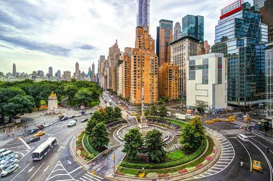
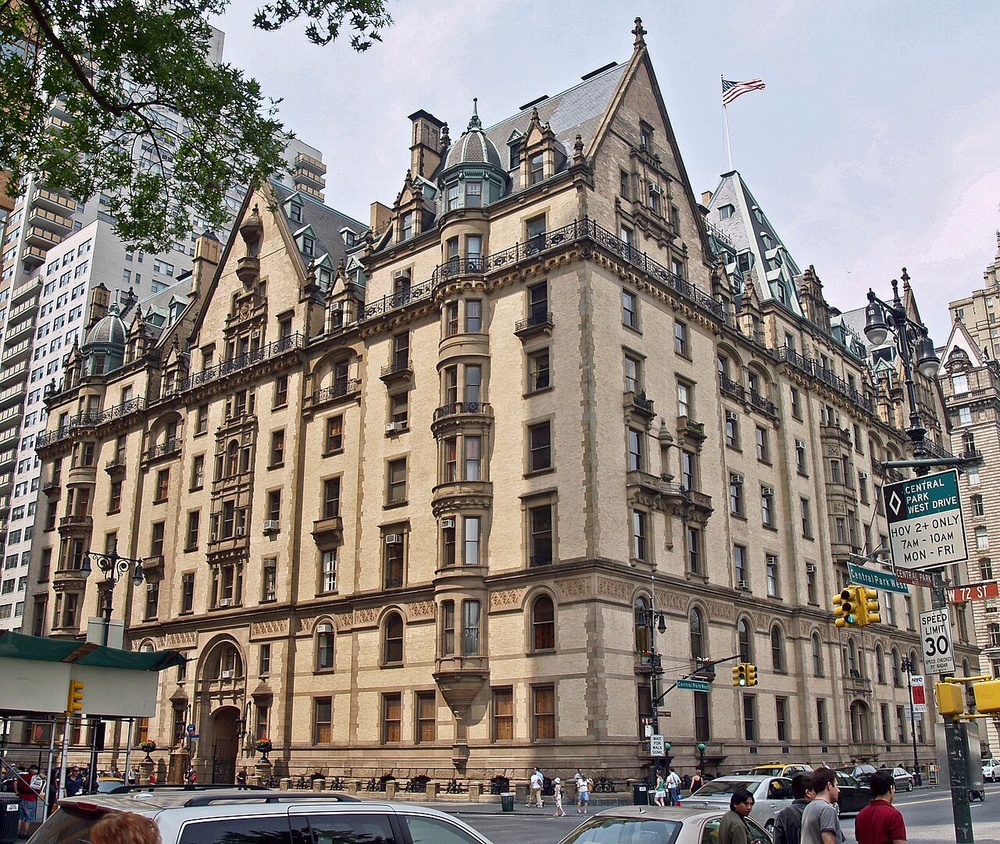
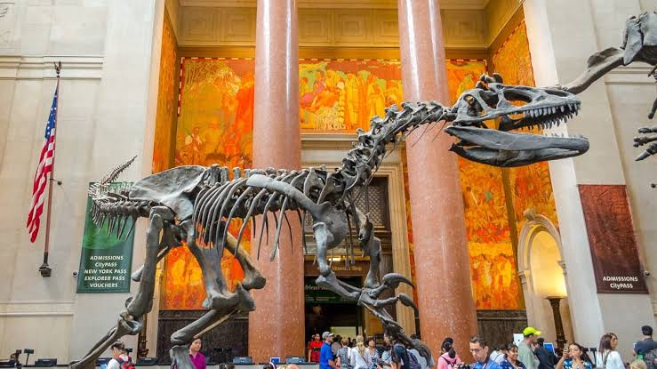
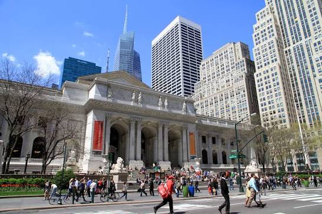
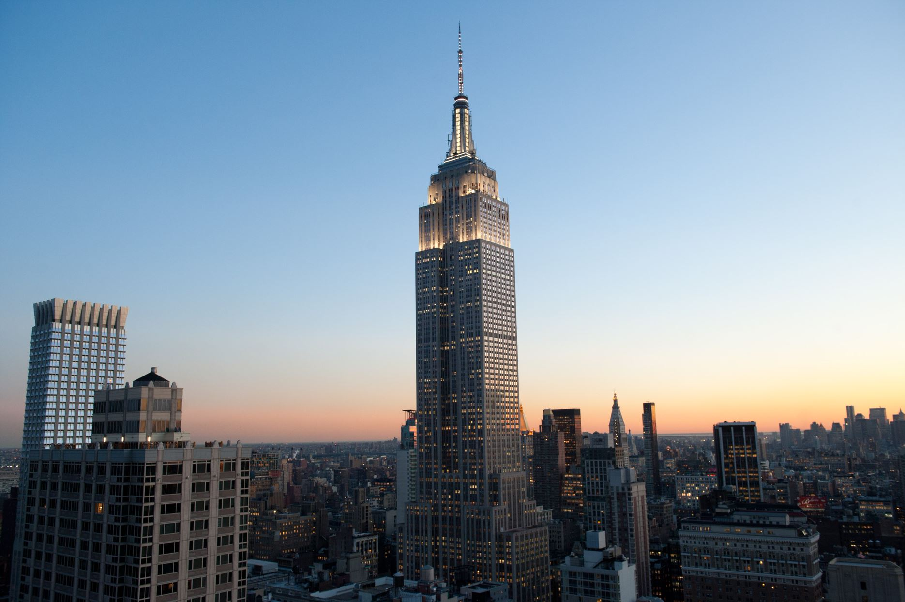
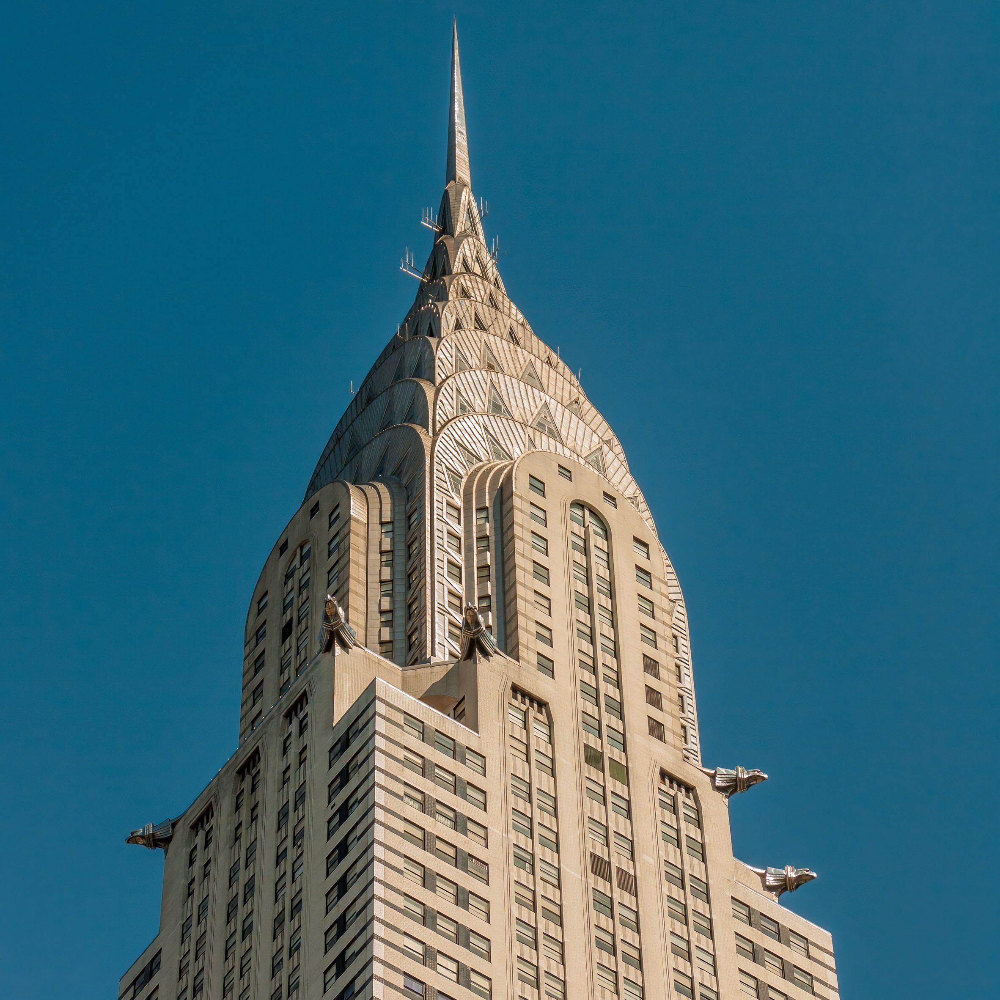
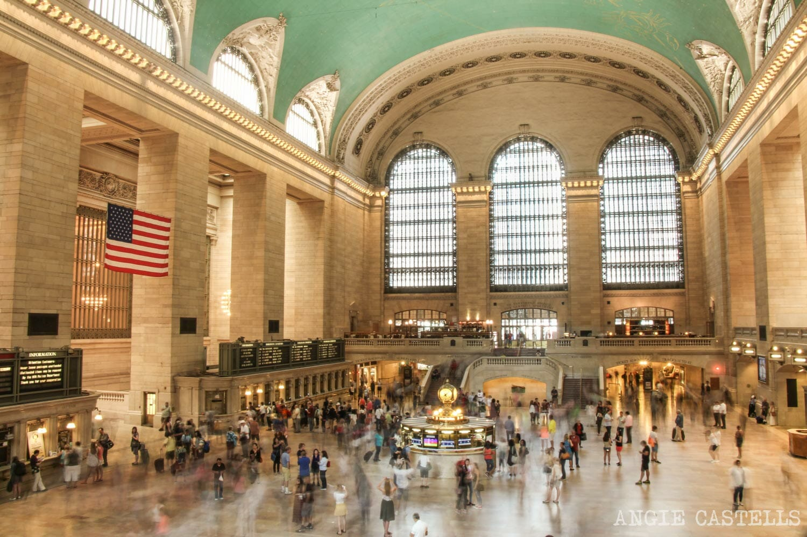
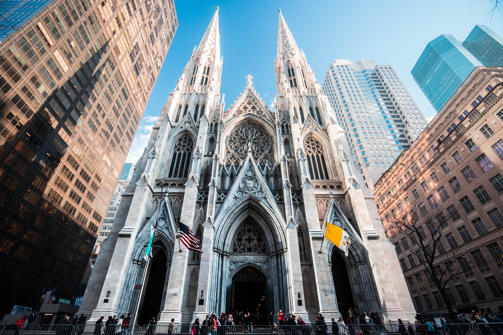
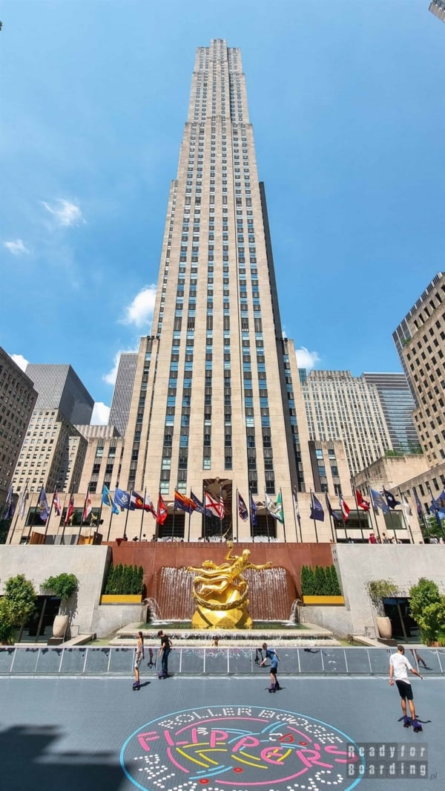
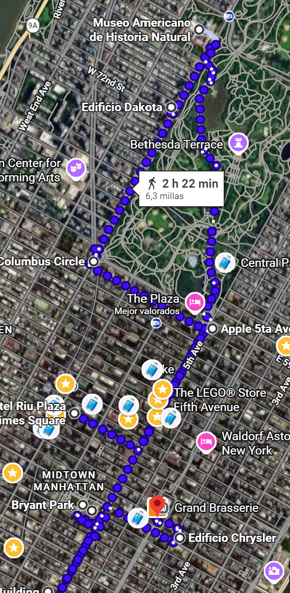

📅 Horario del día
Visita / Monumento
Comer / Beber
Desplazamiento
06:30 – 07:30
🏃 Posibilidad salir a correr
Opcional: salida matutina a correr antes del tour. Hay 1 km hasta Central Park.
07:30 – 08:00
☕ Desayuno
Deli, 7 Eleven o Matto Espresso — cafés express cerca del hotel.
08:00 – 08:20
🚶🏻♂️➡️ Desayuno → Tienda Apple
Si hemos desayunado temprano, visitar tienda Apple. Si no da tiempo, el día siguiente.
08:20 – 08:30
🍎 Tienda Apple + TORRE TRUMP
La icónica tienda Apple de la 5ª Avenida — cubo de cristal. Primera parada del día.
08:30 – 08:45
🚶🏻♂️➡️ Tienda Apple → Columbus Circle
Ir a Columbus Circle.
08:45 – 09:00
⭕ Columbus Circle
Rotonda monumental en la esquina suroeste de Central Park.
09:00 – 09:20
🚶🏻♂️➡️ Columbus Circle → Edificio Dakota
Ir a Edificio Dakota.
09:20 – 09:40
🏬 Edificio Dakota
Edificio residencial. A sus puertas murió John Lennon.
09:40 – 09:50
🚶🏻♂️➡️ Edificio Dakota → Museo Americano de Historia Natural
Ir al Museo.
10:00 – 13:00
🦕 Museo Historia Natural (3h)
Uno de los mejores museos naturales del mundo. Intentar entrar a primera hora para evitar aglomeración.
13:00 – 14:30
🍔 Comer
Comer en la zona. Si salimos pronto, tal vez ver Central Park o ir caminando / metro o taxi hasta Bryant Park y comer allí. Se ha decidido no ver Central Park por la calor, y pasarlo al día siguiente.
14:30 – 15:00
🚇 30 min en metro
Metro hacia la zona de Midtown. También opción de taxi.
15:00 – 15:30
📚 Biblioteca Pública de NY (30 min) — ¡0€!
Arquitectura beaux-arts impresionante. Entrada gratuita. Bryant Park al lado.
15:30 – 16:00
🌿 Bryant Park
Parque urbano junto a la biblioteca. Summit y Crysler Building visibles desde aquí.
16:00 – 16:10
🚶🏻♂️➡️ Byant Park → Empire State
Ir al Empire. Comprar entrada a última hora disponible (16:50). Si es pronto aún visitar primero Crysler Building y Estación Central. Seguramente nos de tiempo, porque el Bryant Park volveremos a la noche para ver la iluminación.
16:50 – 18:20
🏢 Entrar al Empire State
Llegar con margen antes de la hora de entrada.
18:20 – 18:40
🚶🏻♂️➡️ Empire State → Crysler Building
Ir a Crysler Building y Estación Central.
18:40 – 18:50
🏬 Crysler Building
Ver el edificio icónico.
18:50 – 19:25
🚂 Grand Central Terminal (30 min)
Bajar a ver el Oyster Bar. Vanderbilt Hall y Mercadito interior.
19:25 – 19:40
🚶🏻♂️➡️ Estación central → Saint Patrick's Cathedral
Ir a Saint Patrick's Cathedral.
19:40 – 20:10
⛪ Saint Patrick's Cathedral (30 min)
Catedral gótica en plena 5ª Avenida. Entrada gratuita.
20:10 – 20:30
🏗 Top of the Rock + Rockefeller Center
Rockefeller Center y Top of the Rock (si da tiempo). Si sobra tiempo, ver tiendas Times Square.
20:30 – 20:40
🚶🏻♂️➡️ Top of the Rock → Bryant Park
Ir a ver Bryant Park de noche.
20:40 – 20:40
🏞️ Bryant Park de noche
Ver el parque de noche.
20:40 – 21:00
🍔 Cenar — Shake Shack Bryant Park
Cena en Shake Shack de Bryant Park. Ver Bryant Park de noche antes de volver al hotel. Llevar a hotel.
21:00 – 00:00
🏨 Hotel
Llegada al hotel, a descansar y cargar pilas para el día siguiente.
Ruta en Google Maps
🗺️ Abrir ruta 1 en Maps 🗺️ Abrir ruta 2 en Maps